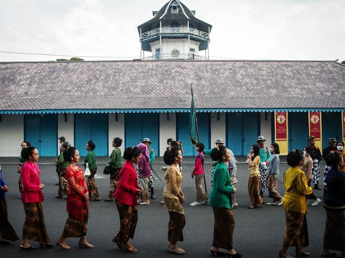

Sejarah

Cerita bermula ketika Sunan Pakubuwana II memerintahkan Tumenggung Honggowongso dan Tumenggung Mangkuyudo serta Komandan pasukan Belanda J.A.B Van Hohenndorff untuk mencari lokasi ibukota kerajaan Mataram Islam yang baru. Setelah mempertimbangkan faktor fisik dan non-fisik akhirnya terpilihlah suatu desa di tepi Sungai Bengawan yang bernama desa Sala ( 1746 Masehi atau 1671 Jawa ). Sejak saat itu desa Sala berubah menjadi Surakarta Hadiningrat dan terus berkembang pesat.
Kota Surakarta pada mulanya adalah wilayah kerajaan Mataram. Kota ini bahkan pernah menjadi pusat pemerintahan Mataram. Karena adanya Perjanjian Giyanti (13 Februari 1755) menyebabkan Mataram Islam terpecah karena propaganda kolonialisme Belanda. Kemudian terjadi pemecahan pusat pemerintahan menjadi dua yaitu pusat pemerintahan di Surakarta dan Yogyakarta. Pemerintahan di Surakarta terpecah lagi karena Perjanjian Salatiga (1767) menjadi Kasunanan dan Mangkunegaran.
Pada tahun 1742, orang-orang Tionghoa memberontak dan melawan kekuasaan Pakubuwana II yang bertahta di Kartasura sehingga Keraton Kartasura hancur dan Pakubuwana II menyingkir ke Ponorogo, Jawa Timur. Dengan Bantuan VOC pemberontakan tersebut berhasil ditumpas dan Kartasura berhasil direbut kembali. Sebagai ganti ibukota kerajaan yang telah hancur maka didirikanlah Keraton Baru di Surakarta 20 km ke arah selatan timur dari Kartasura pada 18 Februari 1745. Peristiwa ini kemudian dianggap sebagai titik awal didirikannya kraton Kasunanan Surakarta.
Pemberian nama Surakarta Hadiningrat mengikuti naluri leluhur, bahwa Kerajaan Mataram yang berpusat di Karta, kemudian ke Pleret, lalu pindah ke Wanakarta, yang kemudian diubah namanya menjadi Kartasura. Surakarta Hadiningrat berarti harapan akan terciptanya negara yang tata tentrem karta raharja (teratur tertib aman dan damai), serta harus disertai dengan tekad dan keberanian menghadapi segala rintangan yang menghadang (sura) untuk mewujudkan kehidupan dunia yang indah (Hadiningrat). Dengan demikian, kata “Karta” dimunculkan kembali sebagai wujud permohonan berkah dari para leluhur pendahulu dan pendirian kerajaan Mataram.
Sejarah nama kota Solo sendiri dikarenakan daerah ini dahulu banyak ditumbuhi tanaman pohon Sala ( sejenis pohon pinus) seperti yang tertulis dalam serat Babad Sengkala yang disimpan di Sana Budaya Yogyakarta. Sala berasal dari bahasa Jawa asli ( lafal bahasa jawa : Solo ) Pada akhirnya orang-orang mengenalnya dengan nama Kota Solo.